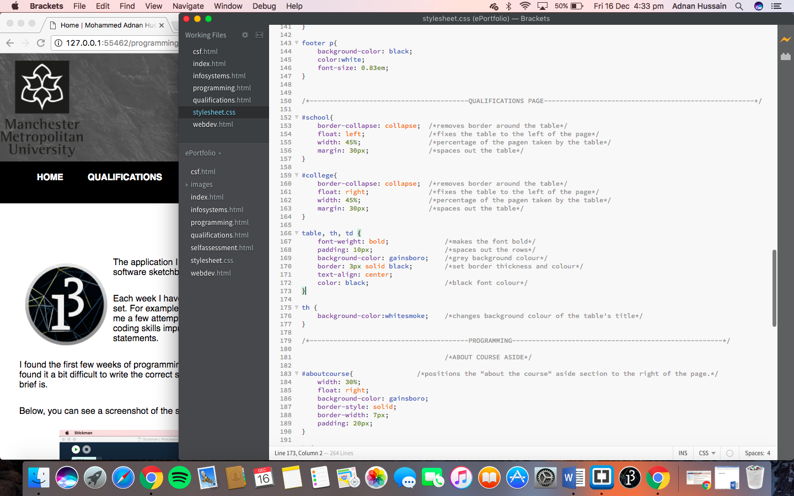

MOHAMMED ADNAN HUSSAIN
MOHAMMED ADNAN HUSSAINI have found this module quite enjoyable so far as the HTML and CSS aspect to it is quite straight forward and easy to grasp. I started off with no knowledge of web design and development and now I am able to create the website you are looking at right now.
I am using Brackets to create the HTML and CSS files for my website. I have chosen this application over the alternative ones available as it is simple to use and it has features such as auto-close tags which makes typing in my code faster.
Although HTML and CSS is easy, I have found it quite tedious at times. An example of this is when I am changing the layout of a page. It is a long process trying to get all the content exacty where I want it as I'm always having to key in different bits of code and go through the process of trial and error.
My HTML and CSS skills are improving the more I work on this website as I'm always learning new things and I hope that I can showcase what I have learnt through my website.
Here you can see a screenshot of the progress so far on my website. As you can see, i have created two tables in the qualifications page.